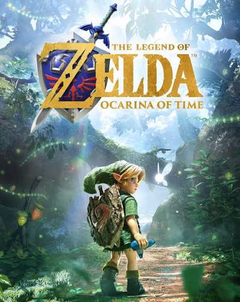

O remake de The Legend of Zelda: Ocarina of Time, lançado para o Nintendo Switch 2 em 5 de novembro de 2026, recria fielmente o clássico de 1998 com gráficos atualizados, trilha sonora orquestrada e dublagem em português do Brasil. Na história, você controla Link em duas épocas diferentes — criança e adulto — para impedir Ganondorf de dominar Hyrule por meio da Triforce.